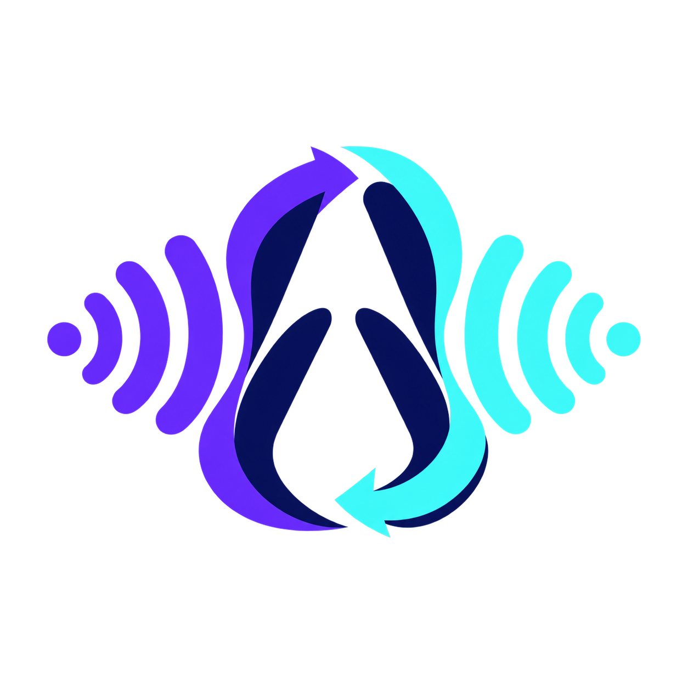

Avorythm
Translate this tab live
فا
⚙
آمادهٔ ترجمه
AUTO → FA
راهاندازی کوتاه لازم است
کلید Gemini و اجازهٔ پردازش را در تنظیمات وارد کن.
بازکردن تنظیمات
زبان مقصد
روش پخش
داخل همین صفحه
سریعترین حالت برای صدا و زیرنویس زنده
ضبط و پلیر هماهنگ
ضبط جلوتر ادامه دارد؛ پلیر مستقل Seek و Fullscreen دارد
سینک پایدار
▶
شروع ترجمه
صدای همین تب ترجمه میشود
خروجی انتخابشده
ویرایش
چهار فایل در Downloads ذخیره شدند.